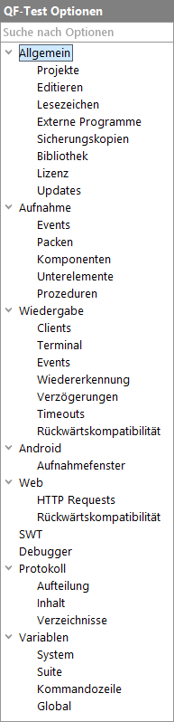

| Version 6.0.3 |
Es gibt diverse Möglichkeiten, das Verhalten von QF-Test zu beeinflussen. Insbesondere für das Aufnehmen und Abspielen von Tests gibt es viele Einstellmöglichkeiten.
QF-Test unterscheidet zwischen User und System Optionen. Useroptionen sind Einstellungen, die das Verhalten der Oberfläche von QF-Test beeinflussen. Sie haben im Gegensatz zu den Systemoptionen keinen Einfluss auf die Aufnahme und das Abspielen von Tests. Useroption werden für jeden Anwender getrennt gespeichert, während Systemoptionen in einer gemeinsamen Systemdatei abgelegt werden. Näheres hierzu finden Sie in Abschnitt 1.6.
3.1+
Bei vielen Option kann deren Wert zur Laufzeit, wie in Abschnitt 46.5
beschrieben, per Skript mittels rc.setOption verändert werden. Abhängig davon,
ob die jeweilige Option in QF-Test selbst oder im SUT ausgewertet wird, ist bei der Beschreibung
der Option ein "Server Skript Name" oder ein "SUT Skript Name" angegeben, welcher der
Konstante aus der Options Klasse entspricht. Natürlich muss die Option
in einem passenden 'Server Skript' oder 'SUT Skript' Knoten gesetzt
werden. Falls der Wert der Option aus einer Liste ausgewählt werden kann, führt die
Beschreibung auch die Konstanten für die möglichen Werte auf.
Auch wenn die Anzahl der Optionen entmutigend erscheinen mag, lassen Sie sich davon nicht abhalten. Alle Optionen haben vernünftige Standardwerte, sodass QF-Test in den meisten Fällen problemlos funktioniert. Wenn Sie dennoch feststellen, dass Sie etwas ändern müssen oder wenn Sie einfach den Bereich von QF-Test's Fähigkeiten kennenlernen wollen, so ist dieses Kapitel etwas für Sie.
Sie können die Optionen mit Hilfe des Dialogs, den Sie über »Bearbeiten«-»Optionen...« erreichen, ansehen und manipulieren. Die Einstellungen werden (mit kleinen Ausnahmen, s.u.) beim Beenden von QF-Test gespeichert (siehe Abschnitt 1.6).
|
|  | ||
|
| Abbildung 37.1: Optionen Baumstruktur | ||
Um zu den gewünschten Optionen zu gelangen, selektieren Sie zunächst im Baum den entsprechenden Ast. Im rechten Teil können Sie dann die Optionen einstellen. Beim Wechsel von einer Gruppe zur anderen werden die Optionen zwar auf Gültigkeit überprüft, aber noch nicht übernommen. Dies geschieht erst bei Bestätigung mit dem OK Button.
| Letzte Änderung: 6.9.2022 Copyright © 1999-2022 Quality First Software GmbH |